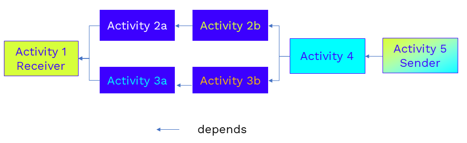
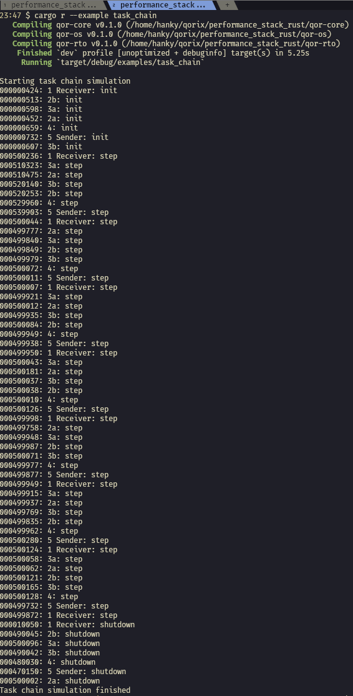

Task Chain Example¶
Introduction¶
This example demonstrates how a task chain that simulates the sequence of activities described in the fixed execution order framework can be implemented using the Runtime.
Assume a task chain comprising seven activities, including one sender and one receiver. The dependencies among these activities are represented in the following diagram.
Furthermore, let us assume that if the execution time of the task chain exceeds the predefined time budget, the Runtime must proceed to error handling. Hence, the Program can be outlined as follows:
Concurrency: // init all activitiesCall
activity1::init()Call
activity2a::init()...
Call
activity5::init()
Computation: // the main programStart the cyclic timer
Syncstop event // wait for the termination eventLoop: // the main loopSynctimer event // wait for the cyclic timer eventTryCatch:- Try:
Computation:Sequence: // the good path: execute the task chainCall
activity1::step()Concurrency:Sequence:Call
activity2a::step()Call
activity2b::step()
Sequence:Call
activity3a::step()Call
activity3b::step()
Call
activity4::step()
Sequence: // the bad path: throw on timeoutSleepuntil deadlineThrowthe timeout exception
- Catch:
// error handling
Concurrency: // shutdown all activitiesCall
activity1::shutdown()Call
activity2a::shutdown()...
Call
activity5::shutdown()
Code Walkthrough¶
As usual, we start by importing the necessary qor-runtime items.
// import the required qor-runtime items to be used in this scope
use qor_rto::prelude::*;
We define the Activity struct and its methods.
// define the Activity
struct Activity
// some fields
}
// define its methods
impl Activity {
fn init(&mut self) -> RoutineResult {
// statements to be called during initialization
}
fn step(&mut self) -> RoutineResult {
// statements to be called cyclically
}
fn shutdown(&mut self) -> RoutineResult {
// statements to be called during shutdown
}
}
Next, we define a cyclic timer that triggers the execution of the task chain periodically. The timer is simply implemented as an endless loop that triggers the timer event and suspends its execution until the specified period has elapsed.
fn cyclic_timer<Adapter: EventAdapter + 'static>(
period: Duration,
notifier: Notifier<Adapter>,
) -> Box<dyn Action> {
Loop::new().with_body(
Sequence::new()
.with_step(Sleep::new(period))
.with_step(Trigger::new(notifier)),
)
}
We create the Runtime Engine and declare the activities and events in the main function.
// The engine is the central runtime executor
let engine = Engine::default();
engine.start().unwrap();
// timer syncronization event
let timer_event = SingleEvent::new();
// our termination event
let stop_event = SingleEvent::new();
// our activities & clones for move into the async closures
let activity_1 = Arc::new(Mutex::new(Activity::new("1 Receiver")));
let activity_2a = Arc::new(Mutex::new(Activity::new("2a")));
let activity_2b = Arc::new(Mutex::new(Activity::new("2b")));
let activity_3a = Arc::new(Mutex::new(Activity::new("3a")));
let activity_3b = Arc::new(Mutex::new(Activity::new("3b")));
let activity_4 = Arc::new(Mutex::new(Activity::new("4")));
let activity_5 = Arc::new(Mutex::new(Activity::new("5 Sender")));
- Now we define our
Programand create aSequencethat encompasses: the initialization block
the main program block
the shutdown block
// Create a new program with a timer, a model function and a termination event
let program = Program::new().with_action(
Sequence::new()
.with_step(
... // initialization block
)
.with_step(
... // main program block
)
.with_step(
... // shutdown block
)
In the initialization block, we invoke all the init() methods of the activities.
.with_step(
Concurrency::new()
.with_branch(Await::new_method_mut(&activity_1, Activity::init))
.with_branch(Await::new_method_mut(&activity_2a, Activity::init))
.with_branch(Await::new_method_mut(&activity_2b, Activity::init))
.with_branch(Await::new_method_mut(&activity_3a, Activity::init))
.with_branch(Await::new_method_mut(&activity_3b, Activity::init))
.with_branch(Await::new_method_mut(&activity_4, Activity::init))
.with_branch(Await::new_method_mut(&activity_5, Activity::init)),
)
- The main program block encompasses the following actions, i.e.,
branches: Start the cyclic timer
Await a stop event
Run the main loop
Note that both the cyclic timer and the main loop run as infinite loops. To ensure that the main program can terminate upon receiving a stop event notification, we implement those concurrent actions as a Composition. Unlike Concurrency, which concludes only when all associated actions have finished, a Composition ends when one of the actions is completed. Hence, the stop event trigger will conclude the main program and transition the execution to the next (shutdown) block.
.with_step(
Computation::new()
// the cyclic timer action
.with_branch(cyclic_timer(PERIOD, timer_event.notifier().unwrap()))
// the termination action
.with_branch(Sync::new(stop_event.listener().unwrap()))
// the main loop
.with_branch(
Loop::new().with_body(
// the main loop body
)
)
)
Finally, we implement the task chain execution as the main loop body. This loop remains blocked until the subsequent cyclic event is triggered by the timer.
The execution of the task chain is wrapped within a TryCatch action. As the name implies, a TryCatch action consists of a try, i.e., with_try block, and a catch, i.e., with_catch one.
// wait for the cyclic timer event
.with_step(Sync::new(timer_event.listener().unwrap()))
.with_step(
TryCatch::new(ExecutionExceptionFilter::for_timeout())
.with_try(
// the normal execution
)
.with_catch(Invoke::new(|_| {
// error handling
println!("Task chain timing violation!");
(Duration::ZERO, UpdateResult::Complete)
}))
)
The try block is primarily responsible for executing the task chain. To determine whether the execution duration of the task chain exceeds the preconfigured deadline, we implement a Composition with two branches.
The first branch executes the actual task chain, while the second branch simply invokes a sleep function that waits until the deadline is reached, after which it throws a timeout exception.
If the execution of the first branch exceeds the deadline, the second branch will trigger the exception and conclude the Computation.
This exception is subsequently caught within the catch block of the TryCatch action.
.with_try(
Computation::new()
.with_branch(
// the task chain execution
)
.with_branch(
// in case the former branch takes longer than the DEADLINE, this branch will throw a timeout exception and conclude the ``Computation`
Sequence::new()
.with_step(Sleep::new(DEADLINE))
.with_step(Throw::new(
ExecutionException::timeout(),
)
)
)
)
The final block of the Program invokes the shutdown() method of all activities concurrently.
// terminate all activities
.with_step(
Concurrency::new()
.with_branch(Await::new_method_mut(&activity_1, Activity::terminate))
.with_branch(Await::new_method_mut(&activity_2a, Activity::terminate))
.with_branch(Await::new_method_mut(&activity_2b, Activity::terminate))
.with_branch(Await::new_method_mut(&activity_3a, Activity::terminate))
.with_branch(Await::new_method_mut(&activity_3b, Activity::terminate))
.with_branch(Await::new_method_mut(&activity_4, Activity::terminate))
.with_branch(Await::new_method_mut(&activity_5, Activity::terminate)),
Finally, we start the Program on the Runtime engine and let it run for 5 seconds. Afterwards, we wait until the Program complete before shutting down the engine.
// spawn the program on the engine
let handle = program.spawn(&engine).unwrap();
// here we wait for some time
std::thread::sleep(Duration::from_secs(5));
// ok, enough
stop_event.notifier().unwrap().notify();
// Wait for the program to finish
let _ = handle.join().unwrap();
println!("Task chain simulation finished");
// Engine shutdown
engine.shutdown().unwrap();
How to Run the Code¶
To run the example, please execute the following command within the repository directory.
cargo r --example task_chain
Output¶
The subsequent image illustrates an example of console output.
